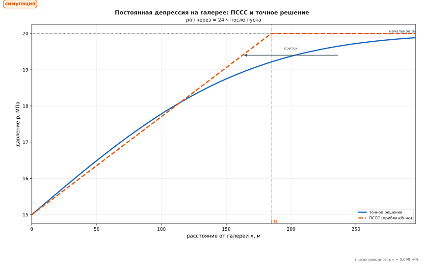

Стр. 497 · §1. Метод последовательной смены стационарных состояний
Следовательно, распределение давления в возмущенной зоне пласта определяется соотношением
Неустановившееся движение упругой жидкости в упругом пласте. Метод ПСССШаг 53 из 60
В книге: «Метод последовательной смены стационарных состояний» стр. 497
Опирается на: шаг 52 «Длина зоны при постоянной депрессии» (предпосылка), шаг 22 «Как градиент превращается в дебит» (предпосылка), шаг 60 «Где ПССС точен, а где груб» (переход к данным)
При постоянной депрессии давление внутри зоны длиной 2√(κt) линейно, а за ней равно pк.
Дебит галереи убывает обратно пропорционально корню из времени.
Погрешность дебита по ПССС — 11%, поэтому автор советует ПССС именно для этого режима.
Пороговая идея. Уметь вычислить давление по ветвям и не переносить погрешность дебита на всё поле. модель
Определите, где наблюдение, вывод или допущение. Раскройте утверждение, чтобы свериться с ответом и цитатой.
Вывод · стр. 497
«$$p(x, t) = p_\kappa - (p_\kappa - p_\tau) \left( 1 - \frac{x}{2\sqrt{\kappa t}} \right), \quad 0 < x \leq 2\sqrt{\kappa t}, \quad (24.8)$$»
Вывод · стр. 497
«$$p(x, t) = p_\kappa, \quad x > 2\sqrt{\kappa t},$$»
Вывод · стр. 497
«$$Q(t) = \frac{k(p_\kappa - p_\tau)}{\mu 2\sqrt{\kappa t}} Bh. \quad (24.9)$$»
Наблюдение · стр. 497
«Погрешность расчета дебита галереи по приближенной формуле (24.8) по сравнению с расчетами по точной формуле (23.27) составляет 11%.»
Вывод · стр. 497
«Следовательно, методом последовательной смены стационарных состояний лучше пользоваться в случае неустановившихся прямолинейно-параллельных потоков при заданной постоянной депрессии.»
Длину зоны 2√(κt) подставляют в линейный профиль. Получается формула (24.8): p = pк − (pк − pг)(1 − x/(2√(κt))). Она действует при 0 < x ≤ 2√(κt). У галереи давление равно pг, на границе — pк. стр. 497
«$$p(x, t) = p_\kappa - (p_\kappa - p_\tau) \left( 1 - \frac{x}{2\sqrt{\kappa t}} \right), \quad 0 < x \leq 2\sqrt{\kappa t}, \quad (24.8)$$»

За границей возмущённой области давление равно начальному контурному. При x > 2√(κt) давление p = pк. стр. 497
«$$p(x, t) = p_\kappa, \quad x > 2\sqrt{\kappa t},$$»
Длину зоны подставляют и в формулу дебита. Получается выражение (24.9): Q(t) = k(pк − pг)Bh/(μ·2√(κt)). Значит, при заданной депрессии дебит обратно пропорционален корню из времени. стр. 497
«$$Q(t) = \frac{k(p_\kappa - p_\tau)}{\mu 2\sqrt{\kappa t}} Bh. \quad (24.9)$$»
Автор сравнивает дебит по ПССС с точной формулой (23.27). Погрешность расчёта дебита составляет 11%. Эта оценка относится к дебиту, а не ко всему полю давления. стр. 497
«Погрешность расчета дебита галереи по приближенной формуле (24.8) по сравнению с расчетами по точной формуле (23.27) составляет 11%.»
Автор делает вывод о применении метода. ПССС лучше использовать для неустановившихся прямолинейно-параллельных потоков при заданной постоянной депрессии. стр. 497
«Следовательно, методом последовательной смены стационарных состояний лучше пользоваться в случае неустановившихся прямолинейно-параллельных потоков при заданной постоянной депрессии.»
В абзаце о погрешности автор ссылается на формулу (24.8). Но (24.8) в тексте описывает давление, а дебит помечен (24.9). Речь идёт о погрешности дебита. стр. 497
Как посчитать давление и дебит
Условие. Галерея работает с постоянным забойным давлением.
Итог. Автор сообщает погрешность 11%.
Профиль давления внутри возмущённой области при постоянном давлении на галерее. стр. 497
| Обозначение | Что это | Единицы |
|---|---|---|
| $p$ | пластовое давление в рассматриваемой точке | Па |
| $x$ | расстояние до галереи | м |
| $t$ | время с начала отбора; dt — его малое приращение | с |
| $p_\kappa$ | начальное давление в пласте и давление на границе возмущения | Па |
| $p_\tau$ | давление на галерее; обозначение как в исходной формуле | Па |
| $\kappa$ | коэффициент пьезопроводности | м²/с |
Исходное давление вне возмущённой области. стр. 497
| Обозначение | Что это | Единицы |
|---|---|---|
| $p$ | пластовое давление в рассматриваемой точке | Па |
| $x$ | расстояние до галереи | м |
| $t$ | время с начала отбора; dt — его малое приращение | с |
| $p_\kappa$ | начальное давление в пласте и давление на границе возмущения | Па |
| $\kappa$ | коэффициент пьезопроводности | м²/с |
Закон изменения дебита галереи. стр. 497
| Обозначение | Что это | Единицы |
|---|---|---|
| $Q$ | объёмный дебит жидкости | м³/с |
| $t$ | время с начала отбора; dt — его малое приращение | с |
| $k$ | проницаемость пласта | м² |
| $p_\kappa$ | начальное давление в пласте и давление на границе возмущения | Па |
| $p_\tau$ | давление на галерее; обозначение как в исходной формуле | Па |
| $\mu$ | динамическая вязкость жидкости | Па·с |
| $\kappa$ | коэффициент пьезопроводности | м²/с |
| $B$ | ширина пласта | м |
| $h$ | толщина пласта | м |
Для расчёта «Постоянная депрессия: профиль давления, дебит и точность» отделите исходные параметры от модельных выходов.
Как тест конкретного выхода модели при определённом сценарии нагрузки.
Где аналогия перестаёт работать: Число из теста не оценивает весь пространственный профиль.
Привязывайте оценку погрешности к конкретному сценарию и выходной величине.
В абзаце о погрешности указана формула (24.8), которая в данном тексте описывает давление. Выражение для дебита помечено (24.9).
%
Верный ответ: 11 %
Автор сравнил ПССС с точной формулой (23.27) и получил 11%. Где это в тексте (стр. 497) →
Верный ответ: Обратно пропорционально корню из времени
В (24.9) в знаменателе стоит 2√(κt). Где это в тексте (стр. 497) →
Все утверждения шага с дословной цитатой автора и страницей книги (по PDF).
В возмущённой зоне, при положительном x до границы включительно, давление задаётся линейным выражением (24.8). вывод
«$$p(x, t) = p_\kappa - (p_\kappa - p_\tau) \left( 1 - \frac{x}{2\sqrt{\kappa t}} \right), \quad 0 < x \leq 2\sqrt{\kappa t}, \quad (24.8)$$»
За границей возмущённой области давление равно начальному контурному. вывод
«$$p(x, t) = p_\kappa, \quad x > 2\sqrt{\kappa t},$$»
Дебит при заданной депрессии обратно пропорционален квадратному корню из времени. вывод
«$$Q(t) = \frac{k(p_\kappa - p_\tau)}{\mu 2\sqrt{\kappa t}} Bh. \quad (24.9)$$»
В тексте для дебита указан результат сравнения с точной формулой (23.27): погрешность 11%. наблюдение
«Погрешность расчета дебита галереи по приближенной формуле (24.8) по сравнению с расчетами по точной формуле (23.27) составляет 11%.»
Автор рекомендует применять ПССС к неустановившемуся прямолинейно-параллельному потоку прежде всего при заданной постоянной депрессии. вывод
«Следовательно, методом последовательной смены стационарных состояний лучше пользоваться в случае неустановившихся прямолинейно-параллельных потоков при заданной постоянной депрессии.»
Стр. 497 · §1. Метод последовательной смены стационарных состояний
Следовательно, распределение давления в возмущенной зоне пласта определяется соотношением
Стр. 497 · §1. Метод последовательной смены стационарных состояний
$$p(x, t) = p_\kappa - (p_\kappa - p_\tau) \left( 1 - \frac{x}{2\sqrt{\kappa t}} \right), \quad 0 < x \leq 2\sqrt{\kappa t}, \quad (24.8)$$
Стр. 497 · §1. Метод последовательной смены стационарных состояний
$$p(x, t) = p_\kappa, \quad x > 2\sqrt{\kappa t},$$
Стр. 497 · §1. Метод последовательной смены стационарных состояний
а дебит галереи – соотношением
Стр. 497 · §1. Метод последовательной смены стационарных состояний
$$Q(t) = \frac{k(p_\kappa - p_\tau)}{\mu 2\sqrt{\kappa t}} Bh. \quad (24.9)$$
Стр. 497 · §1. Метод последовательной смены стационарных состояний
Погрешность расчета дебита галереи по приближенной формуле (24.8) по сравнению с расчетами по точной формуле (23.27) составляет 11%. Следовательно, методом последовательной смены стационарных состояний лучше пользоваться в случае неустановившихся прямолинейно-параллельных потоков при заданной постоянной депрессии.
На этот шаг опираются: шаг 60 «Где ПССС точен, а где груб».
Профиль, дебит и точность при постоянной депрессии
Ссылки в ответе ведут к исходному тексту.